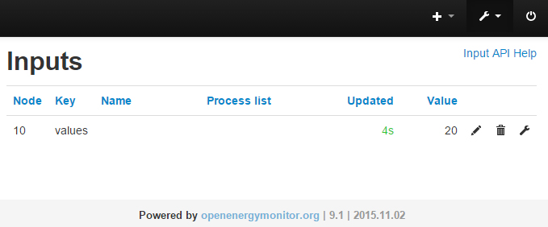

HI all,
I have been playing around with the new EmonCMS v9.1 and am loving it so far. Have been able to get it to subscribe to my MQTT feeds quite easily. However it is not able to extract all the csv data in the MQTT message.
Could someone please let me know what i have done wrong or point me to another post / documentation which i have missed. Thanks.
Details below:
EmonCMS:

EmonHub Log Extract:
2015-11-15 23:21:09,313 DEBUG RFM2Pi 338 NEW FRAME : OK 10 20 0 22 0 33 0 18 0 0 0 (-68) 2015-11-15 23:21:09,316 DEBUG RFM2Pi 338 Timestamp : 1447590069.31 2015-11-15 23:21:09,317 DEBUG RFM2Pi 338 From Node : 10 2015-11-15 23:21:09,318 DEBUG RFM2Pi 338 Values : [20, 22, 33, 18, 0] 2015-11-15 23:21:09,319 DEBUG RFM2Pi 338 RSSI : -68 2015-11-15 23:21:09,321 INFO RFM2Pi Publishing: rx/10/values 20,22,33,18,0 2015-11-15 23:21:09,322 DEBUG RFM2Pi 338 Sent to channel' : ToEmonCMSq
Re: [EmonCMS v9] MQTT - How to split up values?
After digging through the source code I was able to modifiy the EmonHubMqttInterfacer.py in the emonhub and I removed the title called values from the publish to mqtt function:
This has resolved my issue and now all of my data is reported on separate inputs. I can go through and update the code of this to be a little bit more robust (take the node definition from the config file and publish against that in mqtt); however i assume this has already been done. If so can anyone point me to some documentation regarding installation of the newer version?
Thanks in advance all
Re: [EmonCMS v9] MQTT - How to split up values?
Without any code changes, a default emoncms v9 installation will split up the MQTT values, provided that you don't add any text to the message. (the format as described in the installation guide)
If you publish to rx/10 your list of comma limited values such as 300,167,996,199 emoncms will split them into;
Node Key Value
10 0 300
10 1 167
10 2 996
10 3 199
You can then name the inputs in emoncms accordingly.
Paul